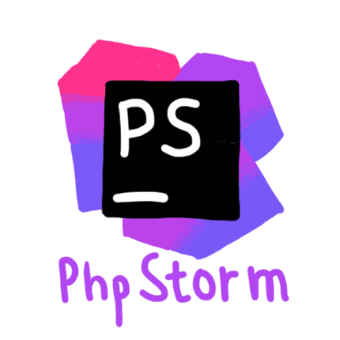
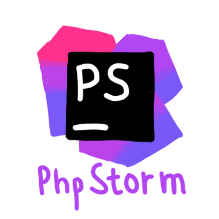

What is EditorConfig?
EditorConfig helps maintain consistent coding styles for multiple developers working on the same project across various editors and IDEs. The EditorConfig project consists of a file format for defining coding styles and a collection of text editor plugins that enable editors to read the file format and adhere to defined styles. EditorConfig files are easily readable and they work nicely with version control systems.
Example File
Below is an example .editorconfig file setting end-of-line and indentation styles for Python and JavaScript files.
| Example file |
|
# EditorConfig is awesome: https://EditorConfig.org # top-most EditorConfig file root = true # Unix-style newlines with a newline ending every file [*] end_of_line = lf insert_final_newline = true # Matches multiple files with brace expansion notation # Set default charset [*.{js,py}] charset = utf-8 # 4 space indentation [*.py] indent_style = space indent_size = 4 # Tab indentation (no size specified) [Makefile] indent_style = tab # Indentation override for all JS under lib directory [lib/**.js] indent_style = space indent_size = 2 # Matches the exact files either package.json or .travis.yml [{package.json,.travis.yml}] indent_style = space indent_size = 2 |
Check the Wiki for some real-world examples of projects using EditorConfig files.
Where are these files stored?
When opening a file, EditorConfig plugins look for a file named .editorconfig in the directory of the opened file and in every parent directory. A search for .editorconfig files will stop if the root filepath is reached or an EditorConfig file with root=true is found.
EditorConfig files are read top to bottom and the most recent rules found take precedence. Properties from matching EditorConfig sections are applied in the order they were read, so properties in closer files take precedence.
For Windows Users:
To create an .editorconfig file within Windows Explorer, you need to create a file named .editorconfig., which Windows Explorer will automatically rename to .editorconfig.File Format Details
EditorConfig files use an INI format that is compatible with the format used by Python ConfigParser Library, but [ and ] are allowed in the section names. The section names are filepath globs (case sensitive), similar to the format accepted by gitignore. Only forward slashes (/, not backslashes) are used as path separators and octothorpes (#) or semicolons (;) are used for comments. Comments should go on their own lines. EditorConfig files should be UTF-8 encoded, with either CRLF or LF line separators. EditorConfig files are read top to bottom and the most recent rules found take precedence.
Filepath glob patterns and currently-supported EditorConfig properties are explained below.
Wildcard Patterns
Special characters recognized in section names for wildcard matching:
| * | Matches any string of characters, except path separators (/) |
| ** | Matches any string of characters |
| ? | Matches any single character |
| [name] | Matches any single character in name |
| [!name] | Matches any single character not in name |
| {s1,s2,s3} | Matches any of the strings given (separated by commas) (Available since EditorConfig Core 0.11.0) |
| {num1..num2} | Matches any integer numbers between num1 and num2, where num1 and num2 can be either positive or negative |
Special characters can be escaped with a backslash so they won't be interpreted as wildcard patterns.
Supported Properties
Note that not all properties are supported by every plugin. The wiki has a complete list of properties.
indent_style: set to "tab" or "space" to use hard tabs or soft tabs respectively. |
indent_size: a whole number defining the number of columns used for each indentation level and the width of soft tabs (when supported). When set to "tab", the value oftab_width (if specified) will be used. |
tab_width: a whole number defining the number of columns used to represent a tab character. This defaults to the value ofindent_size and doesn't usually need to be specified. |
end_of_line: set to "lf", "cr", or "crlf" to control how line breaks are represented. |
charset: set to "latin1", "utf-8", "utf-8-bom", "utf-16be" or "utf-16le" to control the character set. |
trim_trailing_whitespace: set to "true" to remove any whitespace characters preceding newline characters and "false" to ensure it doesn't. |
|
insert_final_newline: set to "true" to ensure file ends with a newline when saving and "false" to ensure it doesn't. |
root: special property that should be specified at the top of the file outside of any sections. Set to "true" to stop .editorconfig files search on current file. |
Currently all properties and values are case-insensitive. They are lowercased when parsed. Generally, if a property is not specified, the editor settings will be used, i.e. EditorConfig takes no effect on that part. For any property, a value of "unset" is to remove the effect of that property, even if it has been set before. For example, add indent_size = unset to undefine
indent_size
property (and use editor default).It is acceptable and often preferred to leave certain EditorConfig properties unspecified. For example,
tab_width
need not be specified unless it differs from the value ofindent_size
. Also, whenindent_style
is set to "tab", it may be desirable to leaveindent_size
unspecified so readers may view the file using their preferred indentation width. Additionally, if a property is not standardized in your project (end_of_line
for example), it may be best to leave it blank.No Plugin Necessary
These editors come bundled with native support for EditorConfig. Everything should just work.


Download a Plugin
Editor


 



Headless Tool
To use EditorConfig with one of these headless tools, you will need to install a plugin.

Contributing to EditorConfig
Give us your feedback
This project is greatly in need of feedback from other developers. We want to hear ideas about how to make this project better. Please use the mailing list to send an email to the EditorConfig team (subscribe by shooting an email to editorconfig+subscribe@googlegroups.com) and use the issue tracker to submit bugs (but please take a look at the FAQ first). Also feel free to tweet at us.
Create a plugin
EditorConfig plugins can be developed by using one of the EditorConfig core libraries. The EditorConfig core libraries accept as input the file being edited, find and parse relevant .editorconfig files, and pass back the properties that should be used. Please ignore any unrecognized properties and property values in your editor plugin for future compatibility, since new properties and permitted values will be added in the future. Currently there is a C library, a Python library, a JavaScript library, two Java libraries (EditorConfig Core Java Library and ec4j), a Lua library, a .NET library, and a Ruby library.
If you are planning on creating a new plugin, use the mailing list to let us know so we can help out and link to your plugin once it's created. If you plan on using one of the EditorConfig cores as a library or command line interface, the C library documentation, Python library documentation or Java library documentation may be helpful.
More details can be found on the Plugin-How-To wiki page.
Main Contributors
Core libraries:
- EditorConfig C Core: Hong Xu and Trey Hunner
- EditorConfig Java Core: Dennis Ushakov
- ec4j: Peter Palaga and Angelo Zerr
- EditorConfig Javascript Core: Trey Hunner and Jed Mao
- EditorConfig Python Core: Trey Hunner
- EditorConfig .NET Core: Martijn Laarman
- EditorConfig Ruby Core: Joshua Peek and Brian Lopez
Editor Plugins:
- Atom plugin: Sindre Sorhus
- Brackets plugin: Chen-Heng Chang
- Code::Blocks plugin: Hong Xu
- Emacs plugin: Trey Hunner, Johan Sundström, 10sr
- Geany plugin: Hong Xu
- Gedit plugin: Trey Hunner
- GitHub Browser extension: Ingvar Stepanyan
- JetBrain plugin: Kevin Bell, Dennis Ushakov
- jEdit plugin: Hong Xu
- Micro plugin: 10sr
- NetBeans plugin: Benny Neugebauer, Michael Koppen, Junichi Yamamoto
- Notepad++ plugin: Hong Xu
- Sublime Text plugin: Sindre Sorhus
- TextMate plugin: Rob Brackett
- Vim plugin: Hong Xu, Trey Hunner
- Visual Studio plugin: William Swanson, nulltoken, Martijn Laarman, Arkadiy Shapkin, Jed Mao
- Visual Studio Code extension: Jed Mao, Chris Dias
- Xcode plugin: Marco Sero
EditorConfig logos drawn by Kat On and Amon Keishima. Website by Trey Hunner and Hong Xu. Please attribute appropriately.
Project Page on GitHub
Follow Us on Twitter